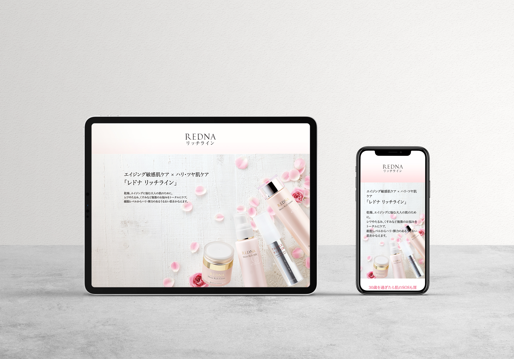

Redna Brand site
某化粧品事業会社で、"REDNA"というブランドの"リッチライン"という商品(下記ビジュアル参照)の成分がリニューアルするということで、ブランドページのリニューアルにおけるディレクション/デザイン/コーディングを担当しました。
依頼内容としては、「"ホワイトライン(下記、画像参照)"のデザインのイメージを活かして、競合他社であるDECENCIAさんのようなテイストを目指して欲しい」ということでした。
メインカラーにはピンク、セカンドカラーにはゴールドを採用して"リッチライン"の世界観を演出しました。